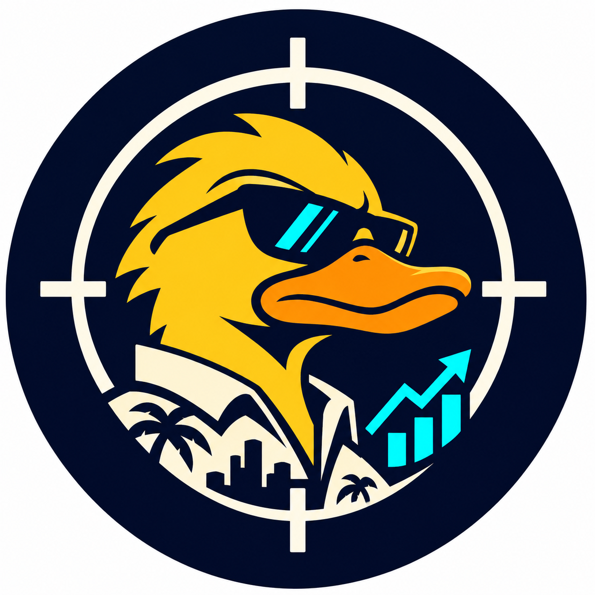

VICEFRAMETrade on Solana
Continue to Jupiter to select a token, connect your wallet, and review the quote before signing. Swaps use real funds on Solana mainnet.
Continue to Jupiter ↗Check the token’s mint address, price impact, and minimum amount received before confirming.